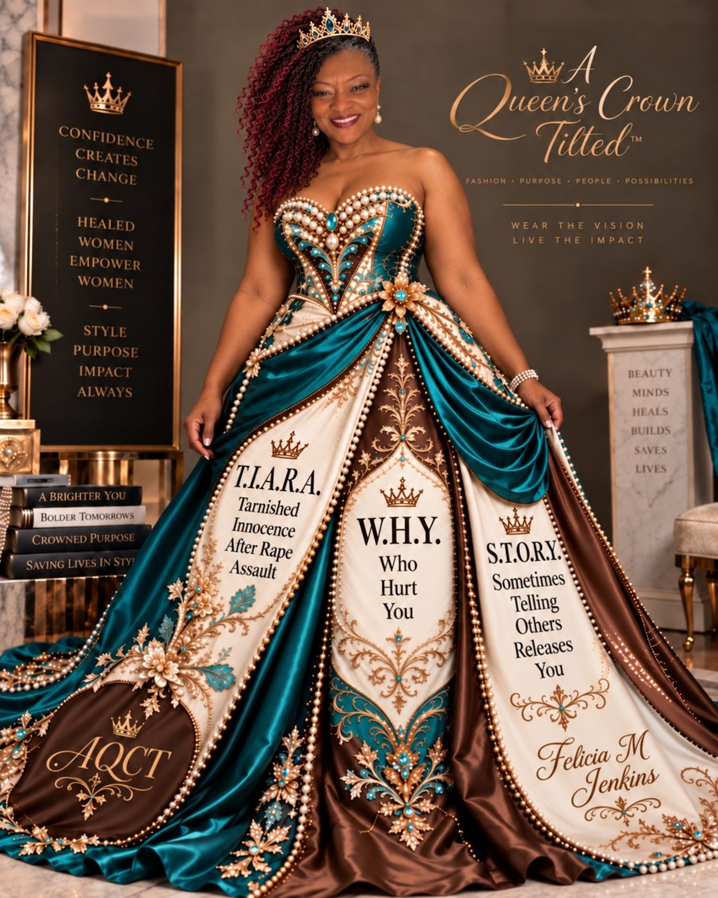
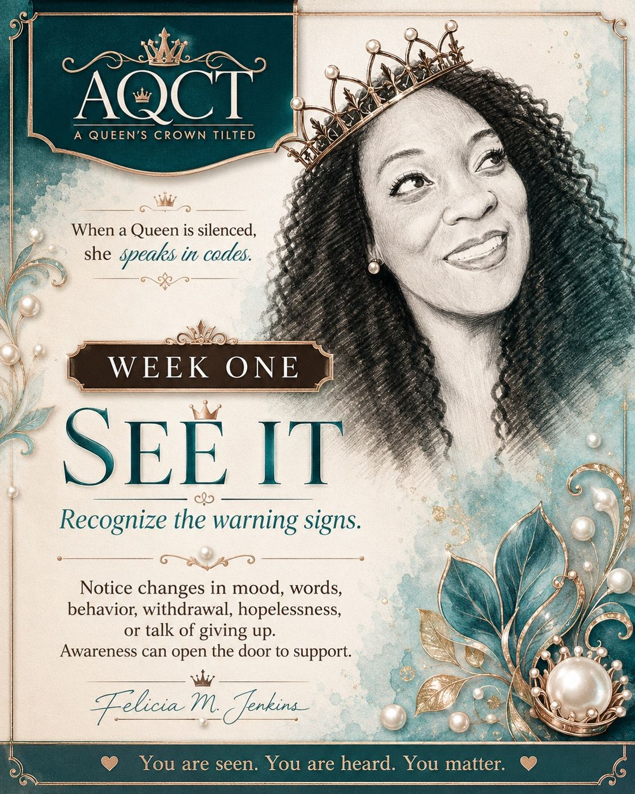
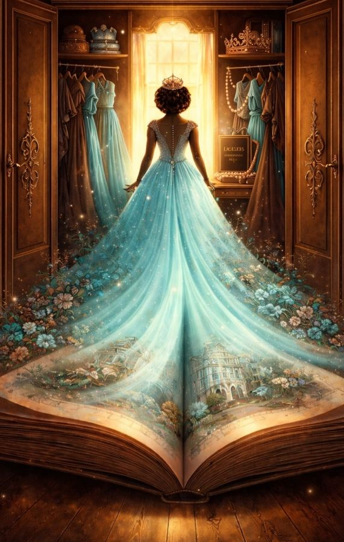
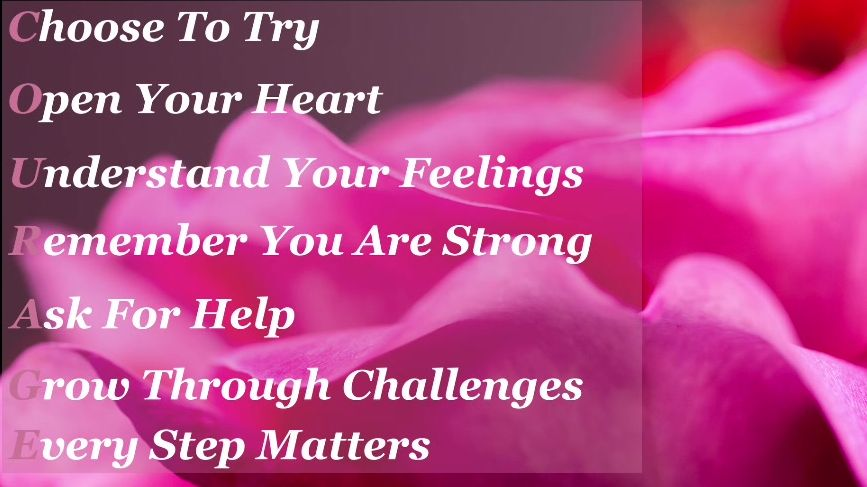
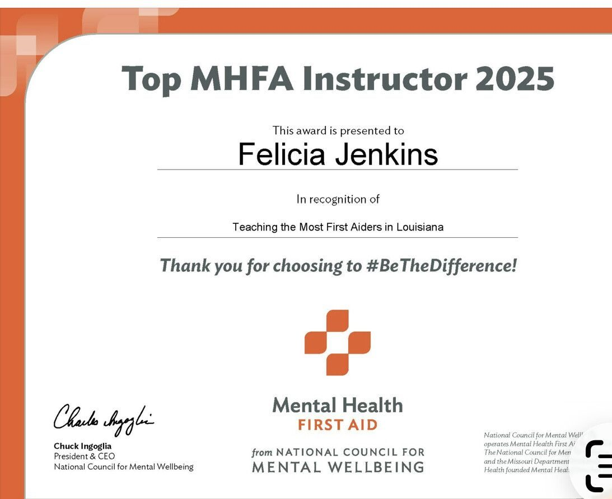

Healing · Education · Empowerment
Your crown may tilt. It never has to fall.
A luxury healing and education movement helping survivors, young people, families, and communities reclaim their voice, purpose, and power.
When a Queen is silenced, she speaks in codes.

The AQCT Movement
Where pain finds language and silence becomes power
A Queen's Crown Tilted turns lived experience into practical education, healing-centered conversations, and original coded language. Every workshop and resource is created to help people feel seen, informed, and equipped to move forward.
Ways We Serve
Community education with practical application
Thoughtfully designed experiences for schools, churches, nonprofits, youth-service providers, families, and community organizations.
Explore AQCT
Teaching tools with a voice of their own

Signature Programs
See It. Say It. Crown It.
Suicide awareness and HIV prevention education for teens, families, and communities.
View programs
The Wardrobe of Healing
Every garment holds a story
Two collections, Garments and Footwear, that give language to what was carried in silence.
Step inside
Weekly Encouragement
Courage begins with choosing to try
Faith-centered messages from Queen Felicia, shared every week.
Watch the series
Statewide Recognition
Top MHFA Instructor in Louisiana, 2025
Felicia Jenkins was recognized for teaching the most Mental Health First Aiders in Louisiana. Known as the Queen of Acronyms, she turns personal survival into a language of healing and service.
Meet the founderMembers Crown Vault
Enter the private world behind the codes
Curated access to approved AQCT acronyms, healing prompts, activities, and teaching resources for members and facilitators.
Explore the VaultWhen a Queen is silenced, she speaks in codes.
Bring AQCT to your community
Workshops, Mental Health First Aid trainings, youth programs, speaking, and custom curriculum for your school, church, or organization.